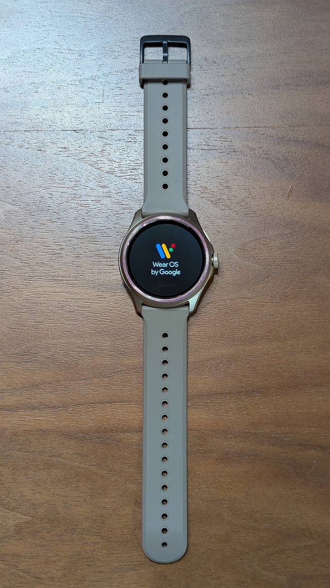

Mobvoi TicWatch Pro 5
概要

Pixel Watch (初代) が2年足らずで充電できなくなったので、同じ Wear OS 搭載機で最廉価(実売15000円弱)の TicWatch Pro 5 を購入して使ってみた感想の記録。
良かったところ
バッテリー
購入当初の Pixel Watch はバッテリーが1日持たないくらい余裕がない代物で、ファームウェアアップデートでバッテリーライフが改善されてギリ2日持つ程度にはなったのですが、充電を忘れると辛いものがありました。TicWatch Pro 5 は余裕で数日持つのでそのあたりの不安はありません。
画面
TicWatch Pro 5 は画面が2層になっていて（日付、曜日、時間などが固定された）省電力画面を常時表示、手首を振ったら普通の画面が点くという設定で使っているのですが、Pixel Watch は省電力画面がなかったので便利になりました。
悪かったところ
ベルト
取り回し、着け心地が Pixel Watch と比較して劣るのが残念でした。Pixel Watch のベルトが滑らかで付け外しし易く優れていると感じるだけで、TicWatch のベルトが悪いというわけではないです。TicWatch は少し重いのですが、重量のバランスに関しても特に違和感はありません。
ウォッチフェイス
一部のウォッチフェイスはカレンダーの予定表示が機能しないなど、プリインストールなのにバグのあるウォッチフェイスが放置されているのでその確認も含めて設定が面倒でした。またウォッチフェイスの変更方法が Pixel Watch と違ったのも気になったところです。これは Wear OS のユーザー数少なくてこなれていないというのが一番の原因なんでしょうけど。
結論
ベルトだけ換えたい。あとは不満なし。